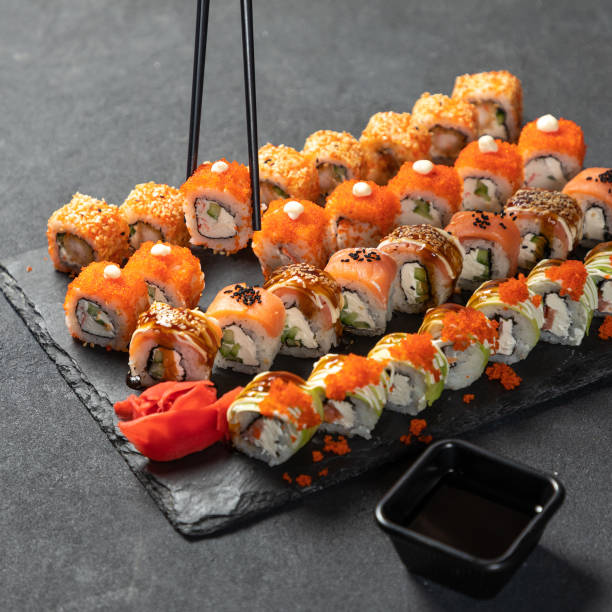
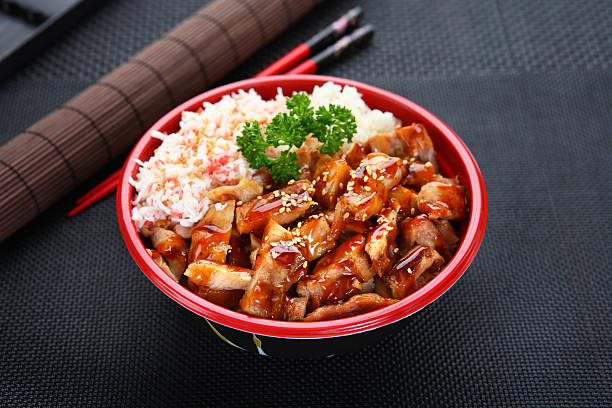

Main Courses
Sushi Platter
An assortment of fresh sushi rolls with a mix of fish, rice, and vegetables, served with soy sauce and wasabi.


Teriyaki Chicken
Grilled chicken glazed with a savory teriyaki sauce, served with steamed rice and vegetables.